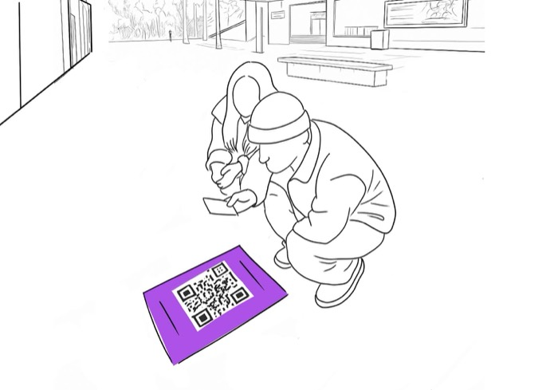
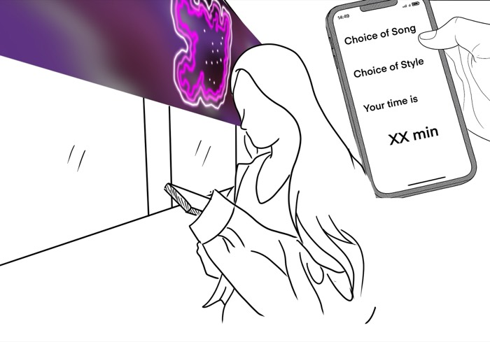
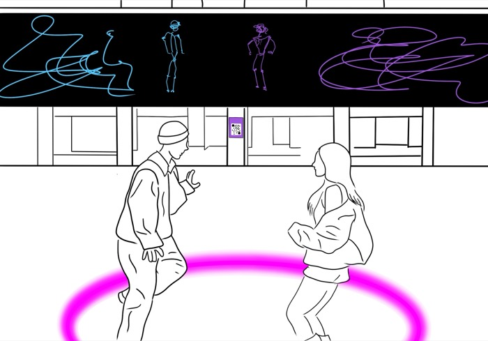
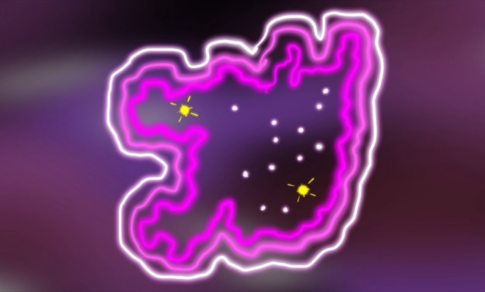
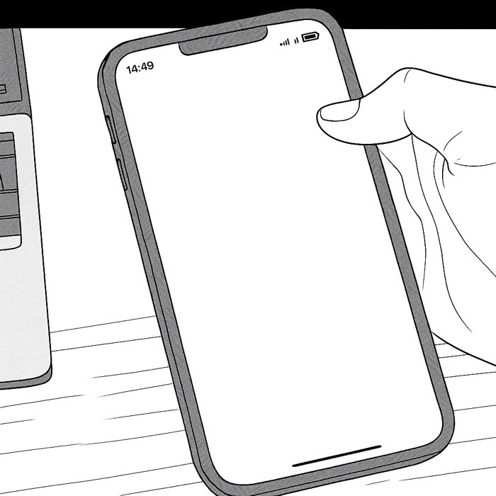

Step 1
When multiple people participate, one participant scans and registers on behalf of the group.

Step 2
One participant customises the session with their chosen music, style and duration.

Step 3
As the cypher begins, the system recognises each dancer's motion and assigns them a unique colour. The visuals intertwine and pulse together, forming a living artwork of connection.

Step 4
Similar to individual mode, when the dance ends, the Sydney Cypher Map reappears, highlighting all participants' locations by adding new glowing marks.

Step 5
Same as individual mode, if participants choose to opt in their email, they will receive a recording of their performance to keep or share later.